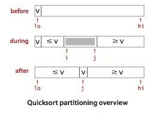
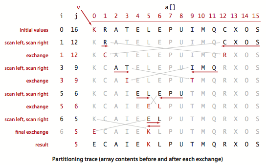

引入
快速排序的主要特点是：
- 原地排序 (in-place);
- 将长度为 N 的数组排序所需的时间和NlgN成正比；
- 排序内循环比大多数排序算法都要短小，意味着无论是在理论上还是实际中都要更快。
缺点：
快速排序非常的脆弱，在实现时要非常小心才能避免低劣的性能。
基本算法
快速排序是一种分治排序算法，它将一个数组分成两个子数组，将两部分独立地排序。不同于归并排序，快速排序的递归调用发生在处理子数之前。
快速排序方法抽象实现如下：
1 | public class Quick { |
上述切分方法示意图: [from algs4]

切分轨迹图: [from algs4]

1 | 命题 K： 将长度为N的无重复的数组排序，快速 |
[notice]: 尽管快速排序有很多优点，它的基本实现仍有一个潜在的缺点：
在切分不平衡时该算法可能及其低效。例如： 如果第一个次从最小的元素切分，第二次从第二小的元素切分，则这样每次只会移除一个元素。
[solution] : 在快速排序之前将数组随机排序可以避免这种情况的发生。
算法改进
1.切换到插入排序
和大多数递归排序算法一样(如归并)，改进快速排序的简单方法基于以下两点：
- 对于小数组，快速排序比插入排序慢；
- 以为递归，快速排序的sort()方法在小数组中也会调用自己。
改进 ： 将sort()方法中的
1 | if (hi <= lo) return; |
改为：
1 | if (hi <= lo + M) { |
[notice] : 这里的切换参数 M 的最佳值是和系统相关的，但是5 ~ 15 之间的任意值在大多数情况下都能令人满意。
2. 三取样切分
改进快速排序性能的第二个方法是使用子数组的一小部分的中位数来切分数组。这样的切分的效果更好，但代价是需要计算中位数。
- 人们发现将取样设为 3 并用大小居中的元素切分效果最好； 我们还可以将取样元素放在数组末尾作为哨兵(sentinel)。
三取样切分抽象实现 : 详细查看
1 | public static void quickSortImproved(Comparable[] a) { |
熵最优的排序
实际应用中经常会出现含有大量重复元素的数组，我们实现的快速排序性能尚可，但是还有巨大的改进空间。例如：一个元素全部重复的子数组就不需要继续排序了，但我们的快速排序还是会继续将它切分为更小的数组。
[solution] : 一个简单想法是将数组切分为三个部分，分别为小于、等于和大于切分元素的数组元素。
DIjkstra 解法 ： 从左到右遍历数组一次，维护一个指针 lt 使得 a[lo .. lt-1]中的元素都小于v, 一个 gt 使得a[gt+1 .. hi]中的元素都大于v, 一个指针 i 使得a[lt .. i-1]中的元素都等于v, a[i .. gt]中的元素都未确定。
- a[i] 小于 v, 将a[lt]和a[i]交换，将lt 和 i加一；
- a[i] 大于 v, 将a[gt]和a[i]交换， 将gt减一；
- a[i] 等于 v, i++.
熵最优排序抽象实现： 详细查看
1 | public static void quickSort(Comparable[] a) { |
[notice] : 三向切分的最坏情况是所有主键均不相同。对于标准的快速排序，随着数组规模的增大其运行时间会趋于平均时间，大幅偏离的情况是非常罕见的，因此可以肯定三向切分的快速排序运行时间和输入的信息量的N倍是成正比的。 ———— 因为对于包含大量重复元素的数组，它将排序时间从线性对数级降到了线性级别。
NOTICE
本文中，涉及的算法详细实现和使用，请移步到github查看。